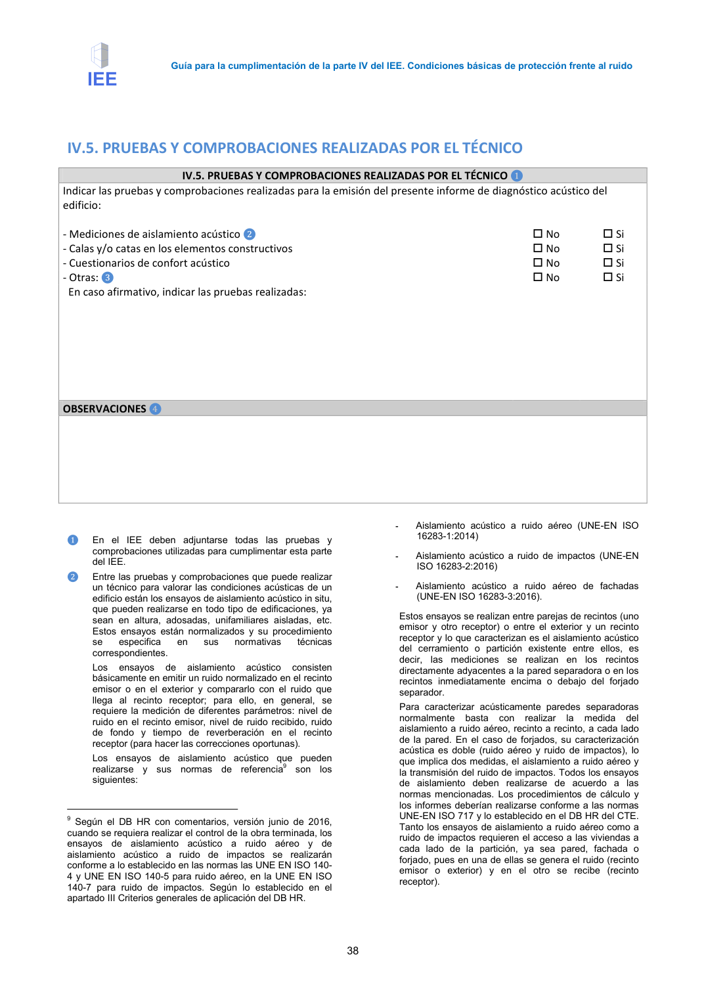
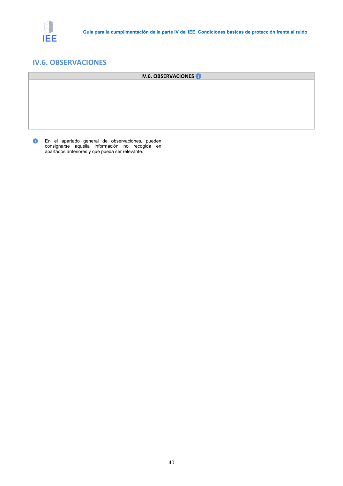

<!doctype html>
<html lang="es"><head><meta charset="utf-8">
<meta name="viewport" content="width=device-width, initial-scale=1">
<title>Anejo 3. Valoración del aislamiento acústico de elementos de separación horizontales y sus mejoras / sección, / IV.5. PRUEBAS Y COMPROBACIONES REALIZADAS POR EL TÉCNICO</title><link rel="stylesheet" href="../estilo.css">
</head><body>
<nav><a href="../index.html">Índice</a> › <a href="../doc/guia-pdf-a5d4ef5252ba-2016-11-01-813669d3066c.html">GUIA</a></nav>

<h1>Anejo 3. Valoración del aislamiento acústico de elementos de separación horizontales y sus mejoras / sección, / IV.5. PRUEBAS Y COMPROBACIONES REALIZADAS POR EL TÉCNICO</h1>
<header class="meta"><p><strong>IEE 2016</strong> · edición 2016-11-01 · capa guia</p>
<p>Documento <code>GUIA-PDF-a5d4ef5252ba</code> · SHA-256 del PDF <code>813669d3066c0ff79457d57b80b0512a4fbb248bc5db1f7baf473c369a064738</code></p>
<p><a href="../../contenido/docs/GUIA-PDF-a5d4ef5252ba/2016-11-01__813669d3066c/fuente.pdf">Copia fiel del PDF fuente</a> · <a href="https://www.codigotecnico.org/pdf/Documentos/HR/IEE_2016.pdf">Fuente oficial</a></p>
<p><a href="https://www.codigotecnico.org/Guias/GuiaIEE_HR.html">Ficha de la disposición en la fuente oficial</a></p>
<div class="cita"><p><a href="../../contenido/docs/GUIA-PDF-a5d4ef5252ba/2016-11-01__813669d3066c/fuente.pdf#page=2">Créditos y autoría en el PDF fuente</a>. Reproducción con cita de fuente y autores.</p>
<p>Permiso literal: Se permite la reproducción del contenido total o parcial de esta Guía siempre y cuando se haga citando la fuente original.</p>
<details><summary>Leer los créditos completos y la autoría</summary><pre class="literal">                    Guía para la cumplimentación de la parte IV del IEE. Condiciones básicas de protección frente al ruido


Dirección y coordinación

Luis Vega Catalán

Mª Cristina Colomo Fernández

Eduardo González de Prado

Dirección General de Arquitectura, Vivienda y Suelo. Ministerio de Fomento

Mª Teresa Carrascal García

Instituto de Ciencias de la Construcción Eduardo Torroja. IETcc- CSIC


Autores

Mª Teresa Carrascal García

Amelia Romero Fernández

Mª Belén Casla Herguedas

Unidad de Calidad en la Construcción del Instituto de Ciencias de la Construcción Eduardo Torroja IETcc- CSIC


Se agradece la colaboración de


Belén Delgado Giménez

Fundación FIDAS

Alberto Esteban González

C.T.O. Estudios y proyectos – Gikesa

Giovanni Muzio

C.T.O. Estudios y proyectos

Francisco Labastida Azemar

Arquitecto, asesor CSCAE

Pedro F. Nogueira López

Universidad de A Coruña

Alejandro Sansegundo Sierra

Acústica SanSegundo


Esta Guía para la cumplimentación de la parte IV del IEE. Condiciones básicas de protección frente al ruido, nace en el marco del

convenio de colaboración llevado a cabo entre el Ministerio de Fomento y el Instituto de Ciencias de la Construcción Eduardo Torroja y

forma parte de la estrategia de este Ministerio de generar una serie de documentos de ayuda que faciliten la aplicación de la normativa

de la edificación y que en este caso concreto, ofrezca a los técnicos criterios para poder realizar una evaluación del estado inicial de las

edificaciones en lo referente a las condiciones acústicas de las viviendas existentes y plantear medidas que incrementen su confort

acústico.


En la redacción de este documento se ha utilizado algunos de los contenidos y de las figuras de la Guía de aplicación del DB HR

Protección frente al ruido. Dicha guía puede consultarse en:

http://www.codigotecnico.org/index.php/menu-documentos-complementarios/menu-guia-aplicacion-db-hr


Se permite la reproducción del contenido total o parcial de esta Guía siempre y cuando se haga citando la fuente original.


                                                2</pre></details></div>
<div class="aviso"><strong>Alcance y límites</strong><ul><li>Extracción automática sin revisión técnica humana completa. Contraste tablas, fórmulas, notas y excepciones con el PDF. La edición disponible no determina la vigencia ni la aplicabilidad a un proyecto.</li><li>Guia o documento divulgativo; no es texto normativo.</li><li>Extracción automática; el cotejo humano está pendiente.</li><li>Semántica y tablas no equivalen a validación exhaustiva.</li></ul></div></header>
<div class="cita">ID técnico a0027 · páginas físicas <a href="../pagina/guia-pdf-a5d4ef5252ba-2016-11-01-813669d3066c__p0038.html">38</a>, <a href="../pagina/guia-pdf-a5d4ef5252ba-2016-11-01-813669d3066c__p0039.html">39</a>, <a href="../pagina/guia-pdf-a5d4ef5252ba-2016-11-01-813669d3066c__p0040.html">40</a></div>
<nav><a href="guia-pdf-a5d4ef5252ba-2016-11-01-813669d3066c__a0026.html">← a0026</a> · <a href="guia-pdf-a5d4ef5252ba-2016-11-01-813669d3066c__a0028.html">a0028 →</a></nav>
<p>Formatos: <a href="../../contenido/docs/GUIA-PDF-a5d4ef5252ba/2016-11-01__813669d3066c/apartado/a0027__iv-5-pruebas-y-comprobaciones-realizadas-por-el-tecnico.json">JSON del segmento</a> · <a href="../../contenido/docs/GUIA-PDF-a5d4ef5252ba/2016-11-01__813669d3066c/apartado/a0027__iv-5-pruebas-y-comprobaciones-realizadas-por-el-tecnico.md">Markdown</a></p>
<pre class="literal">IV.5. PRUEBAS Y COMPROBACIONES REALIZADAS POR EL TÉCNICO
IV.5. PRUEBAS Y COMPROBACIONES REALIZADAS POR EL TÉCNICO ❶
Indicar las pruebas y comprobaciones realizadas para la emisión del presente informe de diagnóstico acústico del
edificio:
- Mediciones de aislamiento acústico ❷
 No
 Si
- Calas y/o catas en los elementos constructivos
 No
 Si
- Cuestionarios de confort acústico
 No
 Si
- Otras: ❸
 No
 Si
En caso afirmativo, indicar las pruebas realizadas:
OBSERVACIONES ❹
❶
En el IEE deben adjuntarse todas las pruebas y
comprobaciones utilizadas para cumplimentar esta parte
del IEE.
❷
Entre las pruebas y comprobaciones que puede realizar
un técnico para valorar las condiciones acústicas de un
edificio están los ensayos de aislamiento acústico in situ,
que pueden realizarse en todo tipo de edificaciones, ya
sean en altura, adosadas, unifamiliares aisladas, etc.
Estos ensayos están normalizados y su procedimiento
se
especifica
en
sus
normativas
técnicas
correspondientes.
Los
ensayos
de
aislamiento
acústico
consisten
básicamente en emitir un ruido normalizado en el recinto
emisor o en el exterior y compararlo con el ruido que
llega al recinto receptor; para ello, en general, se
requiere la medición de diferentes parámetros: nivel de
ruido en el recinto emisor, nivel de ruido recibido, ruido
de fondo y tiempo de reverberación en el recinto
receptor (para hacer las correcciones oportunas).
Los ensayos de aislamiento acústico que pueden
realizarse y sus normas de referencia9 son los
siguientes:
9 Según el DB HR con comentarios, versión junio de 2016,
cuando se requiera realizar el control de la obra terminada, los
ensayos de aislamiento acústico a ruido aéreo y de
aislamiento acústico a ruido de impactos se realizarán
conforme a lo establecido en las normas las UNE EN ISO 140-
4 y UNE EN ISO 140-5 para ruido aéreo, en la UNE EN ISO
140-7 para ruido de impactos. Según lo establecido en el
apartado III Criterios generales de aplicación del DB HR.
-
Aislamiento acústico a ruido aéreo (UNE-EN ISO
16283-1:2014)
-
Aislamiento acústico a ruido de impactos (UNE-EN
ISO 16283-2:2016)
-
Aislamiento acústico a ruido aéreo de fachadas
(UNE-EN ISO 16283-3:2016).
Estos ensayos se realizan entre parejas de recintos (uno
emisor y otro receptor) o entre el exterior y un recinto
receptor y lo que caracterizan es el aislamiento acústico
del cerramiento o partición existente entre ellos, es
decir, las mediciones se realizan en los recintos
directamente adyacentes a la pared separadora o en los
recintos inmediatamente encima o debajo del forjado
separador.
Para caracterizar acústicamente paredes separadoras
normalmente
basta
con
realizar
la
medida
del
aislamiento a ruido aéreo, recinto a recinto, a cada lado
de la pared. En el caso de forjados, su caracterización
acústica es doble (ruido aéreo y ruido de impactos), lo
que implica dos medidas, el aislamiento a ruido aéreo y
la transmisión del ruido de impactos. Todos los ensayos
de aislamiento deben realizarse de acuerdo a las
normas mencionadas. Los procedimientos de cálculo y
los informes deberían realizarse conforme a las normas
UNE-EN ISO 717 y lo establecido en el DB HR del CTE.
Tanto los ensayos de aislamiento a ruido aéreo como a
ruido de impactos requieren el acceso a las viviendas a
cada lado de la partición, ya sea pared, fachada o
forjado, pues en una de ellas se genera el ruido (recinto
emisor o exterior) y en el otro se recibe (recinto
receptor).

Guía para la cumplimentación de la parte IV del IEE. Condiciones básicas de protección frente al ruido
39
Selección de recintos a ensayar
Deben aplicarse unos criterios que ayuden a la
selección de los recintos a ensayar. Esta selección
dependerá del uso de los recintos y de las colindancias
que se establezcan entre ellos y también de sus
características
geométricas
y
sus
soluciones
constructivas. En general, se seleccionarán los casos
más desfavorables o restrictivos para la realización de
los ensayos.
Los recintos que se seleccionen como receptores
deberían ser aquellos más sensibles desde el punto de
vista de la protección frente al ruido, es decir, los
recintos protegidos (dormitorios y estancias), pues son
aquellos en los que es más importante garantizar las
condiciones de confort acústico.
Debe tenerse en cuenta la colindancia o proximidad
entre los recintos protegidos y los recintos de actividad
y/o los recintos de instalaciones, de forma que se
seleccionen éstos últimos como recintos emisores, al
margen de que también puedan seleccionarse como
emisores recintos protegidos que pertenezcan a
distintas unidades de uso.
En
cuanto
a
las
soluciones
constructivas
se
seleccionarían aquellos recintos cuyos elementos de
separación a ensayar ofrezcan un menor aislamiento
teórico.
Desde el punto de vista de las características
geométricas de los recintos deben tenerse en cuenta
varios criterios:
-
Los recintos receptores que tengan menor volumen.
-
En el caso de aislamiento acústico a ruido aéreo,
aquellas parejas de recintos en las que la partición
tenga una superficie común mayor.
-
En el caso de aislamiento acústico a ruido de
impactos, aquellas parejas de recintos en las que la
superficie común de forjado sea menor.
-
En el caso de fachadas aquellas con una relación
superficie de huecos / superficie total más elevada.
❸
Debe especificarse si se han realizado otras pruebas.
Por ejemplo, en algunas ocasiones, como es el caso del
ruido producido por los recintos de actividad, recintos de
instalaciones o las instalaciones comunes del edificio,
puede
ser
conveniente
realizar
otro
tipo
de
comprobaciones acústicas más enfocadas a conocer los
niveles de ruido recibidos en los recintos más
susceptibles (recintos protegidos), procedente de los
recintos mencionados o incluso de otras fuentes de
ruido exteriores. Estas pruebas acústicas podrán ser
complementarias o no a los ensayos de aislamiento
acústico.
El procedimiento de medida y evaluación de los niveles
de inmisión de ruido viene especificado en distinta
legislación aplicable (estatal, autonómica o municipal):
-
Real Decreto 1367/2007 por el que se desarrolla la
Ley 37/2003 del Ruido, en lo referente a zonificación
acústica, objetivos de calidad y emisiones acústicas.
-
Leyes
o
decretos
autonómicos,
ordenanzas
municipales, etc.
❹
En este apartado puede consignarse cualquier aspecto
relevante no comentado anteriormente.

Guía para la cumplimentación de la parte IV del IEE. Condiciones básicas de protección frente al ruido
40</pre>
<figure><a href="../../contenido/docs/GUIA-PDF-a5d4ef5252ba/2016-11-01__813669d3066c/figura/p0038.png"></a><figcaption>Página visual 38, para contrastar fórmulas, tablas y figuras.</figcaption></figure>
<figure><a href="../../contenido/docs/GUIA-PDF-a5d4ef5252ba/2016-11-01__813669d3066c/figura/p0039.png"></a><figcaption>Página visual 39, para contrastar fórmulas, tablas y figuras.</figcaption></figure>
<figure><a href="../../contenido/docs/GUIA-PDF-a5d4ef5252ba/2016-11-01__813669d3066c/figura/p0040.png"></a><figcaption>Página visual 40, para contrastar fórmulas, tablas y figuras.</figcaption></figure>
<footer>Generado estáticamente desde el corpus normalizado; sin JavaScript ni servicios externos. El HTML es una vista reproducible; conserve la fuente y la edición al citar.</footer>
</body></html>
